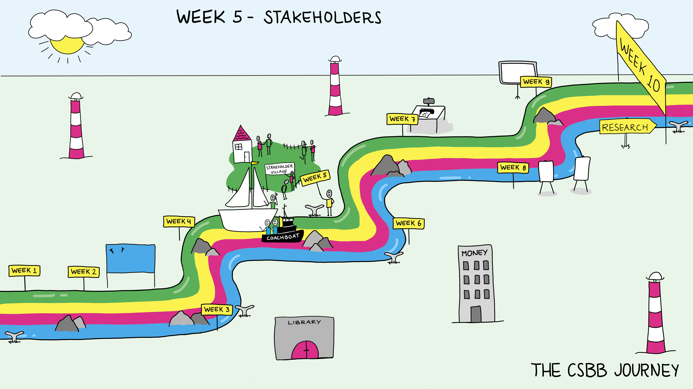

Week 1.5: Stakeholders#
Science Spotlight
Lecture: Stakeholders: what does it mean and why do we care?
Workshop: Stakeholder Panel
Group Activity: What do(n’t) you know?
Friday Symposium
Introduction and Goals#
Stakeholder can be defined as someone who has an interest in the success of something. This includes the people working on it, paying for it, and will be affected or use the results from it. At its broadest definition, everyone could be a stakeholder in your project, though most are not active participants. It’s usually more useful to think of them in three broad categories: those who support your project, those opposed, and those who will be affected by it. Understanding who and what their motivation is can be very important in building effective collaborations, designing excellent projects and having a successful career. Also important to remember is that people have multiple things they’re stakeholders in with competing interests.
This week we will be talking about stakeholders. What are they? Why do we care about stakeholders? How do they impact what we are doing? Whether you have heard of the term stakeholders before or not—being aware of who they are and how they impact your research and actions can help you to produce a result that best fits the circumstances and expectations present.
Lecture: Stakeholders#
Overview#
Besides “what are they” and “why do we care about them”, this lecture should help you answer more questions about the importance of stakeholders. We will discuss how to collaborate with them, why they would collaborate with you, and what could break this relationship. At the end of this lecture, students should have an inventory of mindsets, epistemological standpoints and doctrines, which help you build a good relationship with stakeholders.
This lecture will introduce the concept of stakeholders to students so they can connect it to their projects and actions. This means discussing topics such as what makes somebody a stakeholder and identifying different stakeholders in different projects and situations the students are in. Students will actively map known and potential stakeholders for their own projects by using the Sailboat gamestorming method.
Regarding the presentations at the end of this minor, students will need to learn about how different types of audiences they will have (eg. supervisor, fellow students) are different stakeholders for their projects and how that should influence the way they present their findings. Furthermore, the characteristics of these audiences, such as along the scale of involved to less involved or how they process information, will be discussed.
This latter part also means that the students should learn some essential communication elements for presenting to and talking with an external but interested party. Keywords for this are speaker/writer, message, audience and context. Considering each of these is vital to for relaying information.
Key concepts#
After this lecture, groups should be able to answer the following questions when it comes to their own project:
What are stakeholders?
Who are the stakeholders in their project?
What do they find important?
What do they already know?
How do they influence your work?
What is your relationship with stakeholders?
Relevant learning goals#
Students can describe the concept of a stakeholder and why this is relevant in the context of research
Students should be able to identify stakeholders in different situations
Students know the influence of stakeholders on their actions
Students understand their own responsibility towards (different types of) stakeholders
Students are able to to make decisions and actions with active consideration of the stakeholders’ influence
Students understand how different audiences are different stakeholders, and the different characteristics that define these audiences
Students know how to present information to stakeholders
Workshop: Stakeholder Panels#
Overview#
This workshop will be a stakeholder panel. Students will ask questions. Panel members may include education experts, researchers, industry, patient advocates.
Relevant learning goals#
Understand different perspectives of why people engage or participate. They’re hopes and desires.
Group activity of the week#
Your project should be coming along, and your background research should be nearing adequate stage. This is the time to assemble your sources. Also analyse what things you still need to research. What don’t you know?
Discussion Questions#
What are you a stakeholder in? How does that influence you? What are different ways you are a stakeholder in things?
How would you describe the difference between internal and external stakeholders?
Would you consider your family something you are a stakeholder in?
Regarding the project:
What is your role in this project?
What is your goal in this project? What should this project accomplish? How do these two questions differ?
How will you communicate the goals and progress made to internal and external stakeholders?
What is your strategy for considering people affected by your project, who don’t have influence on it?
Weekly Submitted Assignments#
Group#
Prepare an annotated list of your sources so far. What do you need to research still?
Individual#
How are the things that you are a stakeholder in related to your sense of identity–who you are? Who do you want to be? (½ page)
References#
A handbook for Stakeholder engagement in research projects
A great example of stakeholder engagement: Lisa ten Brug: ObeCity, How neighbourhood design can reduce childhood obesity
An interesting video on citizens’ involvement in science projects changing the way we do science